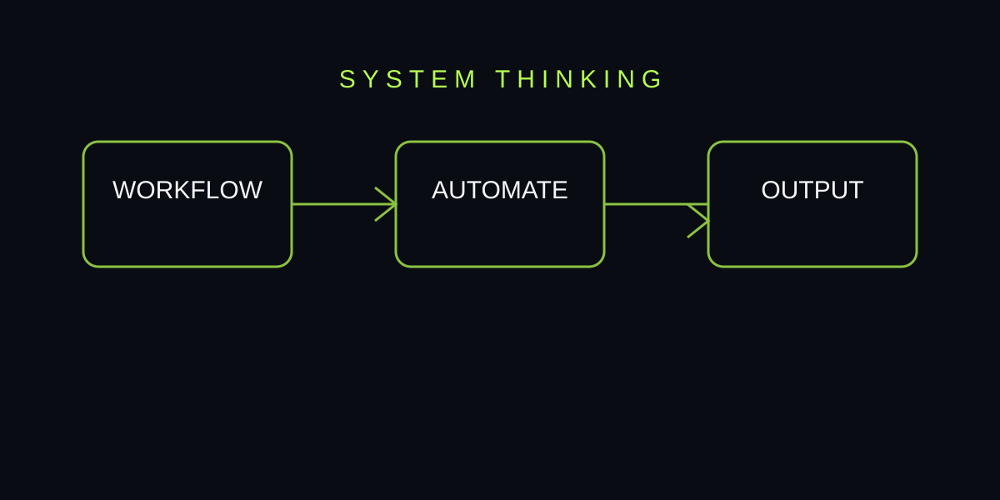
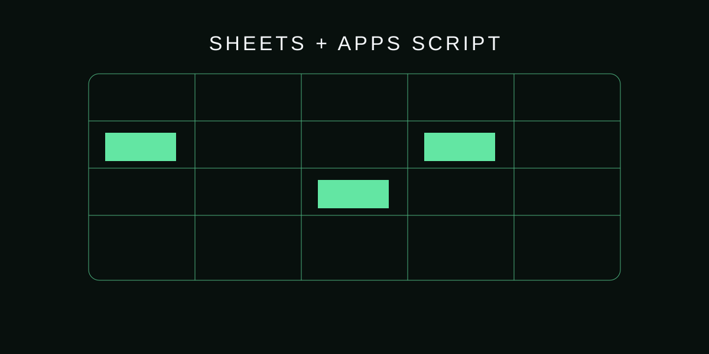
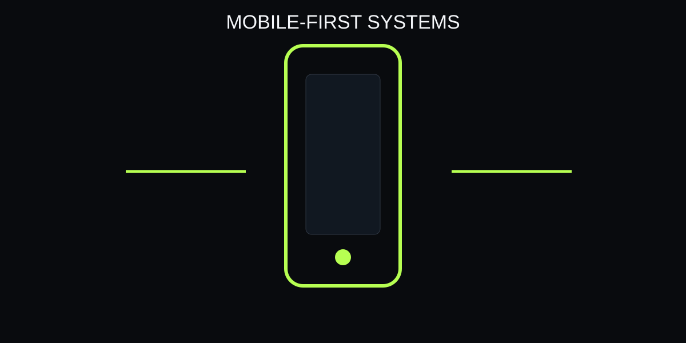
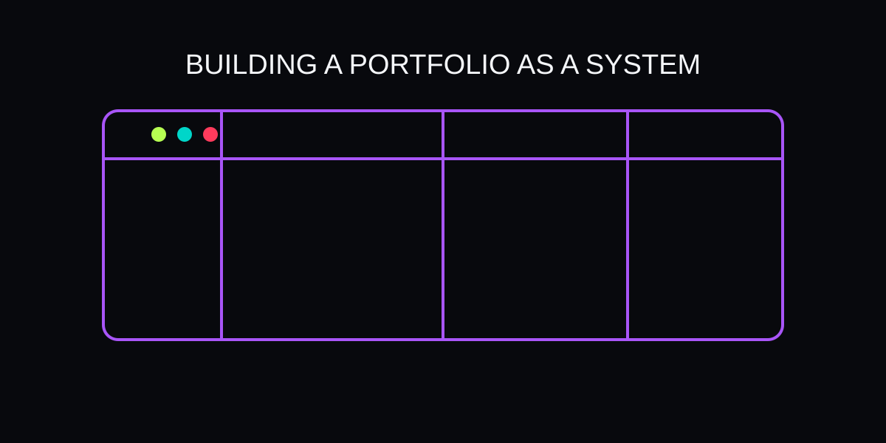

Practical ideas from the work behind the portfolio.
Articles about systems, e-commerce operations, SEO, automation, AI interfaces, performance and building dependable digital products.

Automation Starts With the Workflow
Why reliable business automation begins by mapping people, inputs, decisions, failure states and outputs before writing code.

Designing Reliable Google Sheets Automation
A practical guide to building Google Sheets and Apps Script workflows that protect data while reducing repetitive operations.

Turning Product Data Into an E-commerce System
How SKU, supplier, quantity, links, images and pricing can become a controlled operational system instead of a messy spreadsheet.

SEO Is Information Architecture
Why search visibility starts with clear pages, useful content, internal links, descriptive metadata and crawlable structure.
What Makes a Portfolio AI Assistant Useful?
A practical look at contextual AI UX: identity, page awareness, portfolio knowledge and safe conversational answers.

Performance Without Sacrificing Design
How to keep an animated portfolio responsive by reducing expensive work, respecting reduced motion and protecting content.

Protecting Data in Automated Workflows
Practical principles for preventing automation from overwriting fields, corrupting records or creating silent inconsistencies.

Why Mobile-First Matters for Interactive Portfolios
Designing navigation, motion, content hierarchy and assistant interactions so the portfolio works on phones as well as desktop.

Building a Portfolio as a System, Not a Single Page
Why a professional portfolio benefits from connected pages, consistent navigation, structured content and an AI layer.

Reliability Is a Feature
Why retries, validation, fallbacks, backups and graceful degradation belong in everyday web and automation work.
Core Web Vitals for Static Portfolios
A practical approach to loading, responsiveness and visual stability.
Accessible Interactions for Animated Websites
Keyboard, focus, contrast and reduced-motion patterns for rich interfaces.
Internal Links as a Knowledge Graph
Connect projects, skills and articles into a useful information architecture.
CSS Design Tokens Across Multiple Themes
Coordinate colors, surfaces, text and focus states with semantic variables.
Automated Quality Checks for Static Websites
Catch broken links, missing metadata and script syntax errors before publishing.